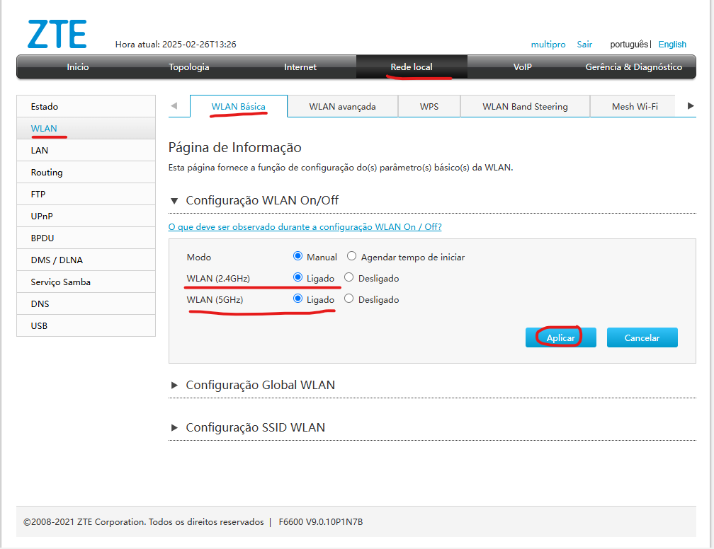
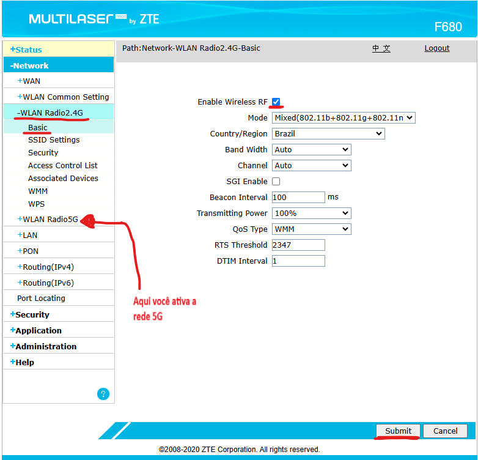

Ativação das rede Wi-Fi - CAT | TrixNet
Para que serve este procedimento ?
Em alguns casos, o assinante entra em contato e as redes Wi-Fi estão desabilitadas, ou por algumas dificuldade de confuguração do aparelho, ou porque alguem mexeu na ONU e apertou o botão Wi-Fi
Se o LED Wi-Fi da ONU estiver apagado, as redes Wi-Fi estão desativas, de tiver acesas é porque está ativada.
Passo a passo de como ativar o Wi-Fi na F6600 (Interface cinza)
Para acessar a area de ativação do Wi-Fi na ONU cinza, segue abaixo:
1. Acesse Rede local> WLAN> WLAN Básica> e ative 2.4G e 5G.
2. Só aplicas após isso.
Passo a passo de como ativar o Wi-Fi na F680 (Interface azul)
Para acessar a area de ativação do Wi-Fi na ONU azul, segue abaixo:
1. Acesse WLAN Radio 2.4G ou WLAN Radio 5G> Basic e ative Enable Wireless RF.
2. Só clicar em Submit após isso.